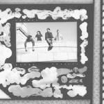

Music Reviews
-
Father John Misty I Love You, Honeybear
J. Tillman becomes one of the great diarists of our generation in I Love You, Honeybear, possessing a keen, merciless intelligence within a sophisticated melodic sensibility.
Juan Edgardo Rodríguez reviews... -

Mount Eerie Sauna
Phil Elvrum's latest double-LP as Mount Eerie is an otherworldly landscape complete with a rich climate and dense atmosphere, but Phil, our lonesome, wandering guide, never fails to keep a strong human warmth burning at its core.
Peter Quinton reviews... -

Natalie Prass Natalie Prass
The Nashville artist manages to harken back to the fluid funk of 1970s R&B and chamber-pop without falling into the trappings of derivation or heightened melodrama.
Joseph Moore reviews... -
H Hawkline In The Pink Of Condition
The eccentric Cardiff songwriter teams up with partner/producer Cate Le Bon on his full-length debut, in which he manages to justify his odd behavior with heaps of whimsical charm.
Juan Edgardo Rodríguez reviews... -

The Dodos Individ
The latest by the veteran San Francisco duo seems restless and agitated, where anxious rumination and energized self-doubt plague the subject matter that materialized on 2013's Visiter.
Joseph Moore reviews... -

Twerps Range Anxiety
The Melbourne foursome's latest is a deeply considered listen, one that relinquishes the audacious idiosyncrasies of Underlay EP in favor of a more scrupulous and intrinsic approach.
Juan Edgardo Rodríguez reviews... -
Sleater-Kinney No Cities to Love
Sleater-Kinney's first album in a decade is a brazenly confident effort that defines itself, a cogently crafted thesis of confidence, tenacity and togetherness.
Gabbie Nirenburg reviews... -
Disappears Irreal
Dark, cold, brooding and good: The Chicago rock reducers known as Disappears release their fifth album, Irreal.
Sean Caldwell reviews... -

Viet Cong Viet Cong
The Calgary foursome's debut effort, featuring two members of defunct post-punk act Women, refines their atonal, unimpeded ethos and convert it into something challenging yet approachable.
Juan Edgardo Rodríguz reviews... -
Belle & Sebastian Girls in Peacetime Want to Dance
The Glaswegian mainstays' latest explores sounds rooted in the dance-pop of the 70s and 80s.
Angel Aguilar reviews...